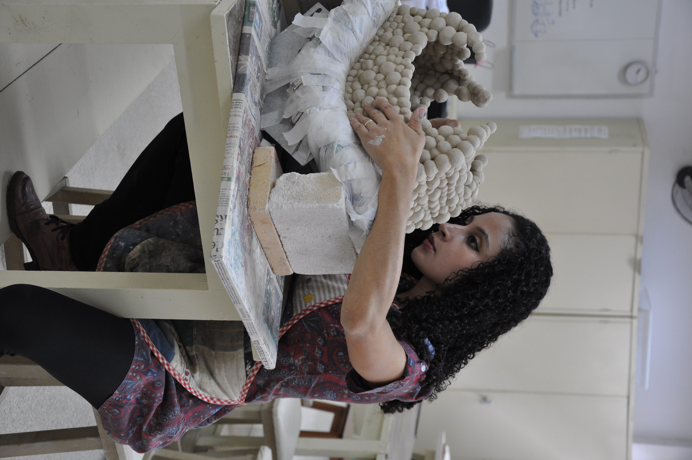

 Virginia Tertuliano (f. 1985, Sao Paolo, Brasilien) bor i Kungsbacka sedan 2019 med hennes man och deras dotter. Familjien flyttade till Sverige 2015. Virginia målar på fritiden. Förutom konst är hon intresserad av naturen, matlagning och följer utvecklingen av förskning om autism.
Studier
text text text
mera text
Utställningar
text text text
mera text
Annat
text text text
mera text